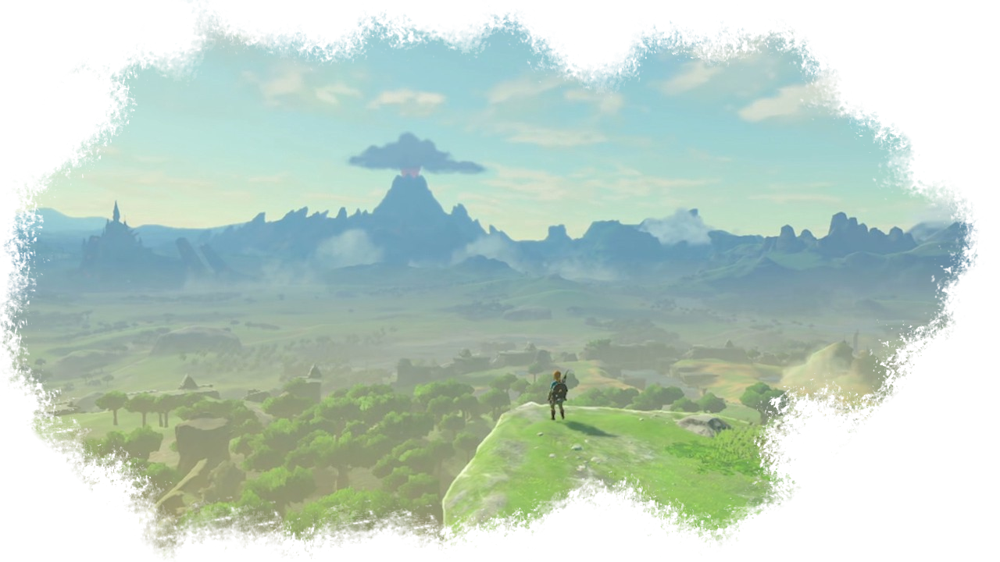
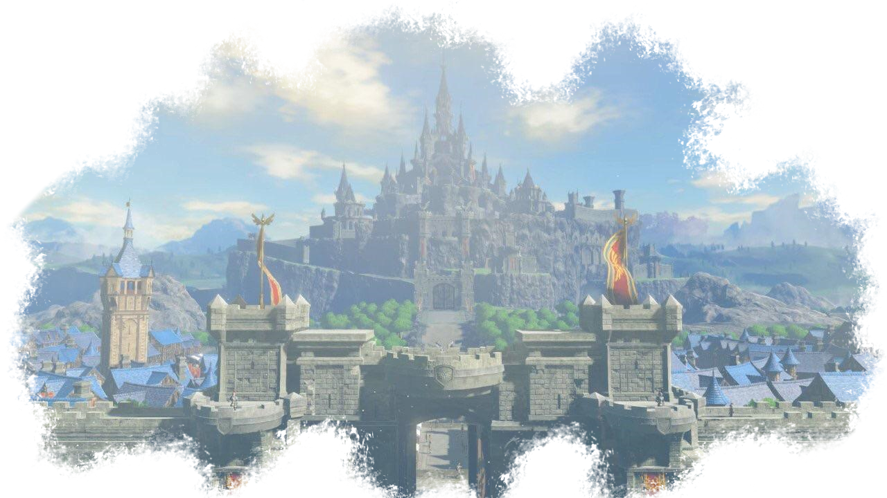
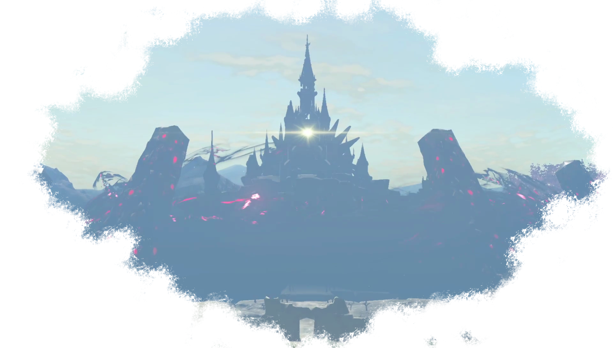
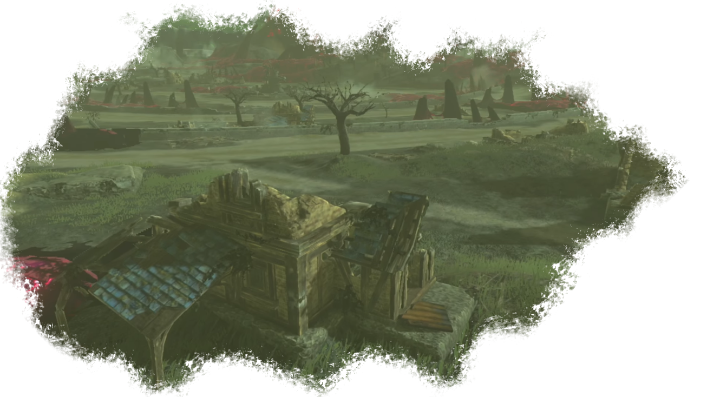
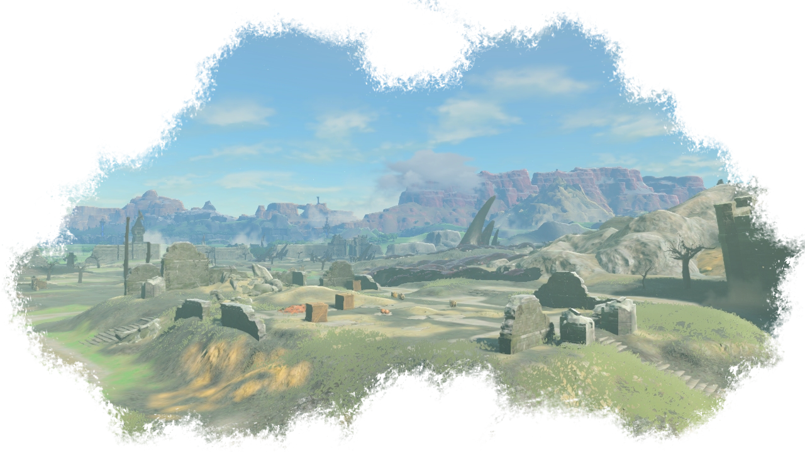
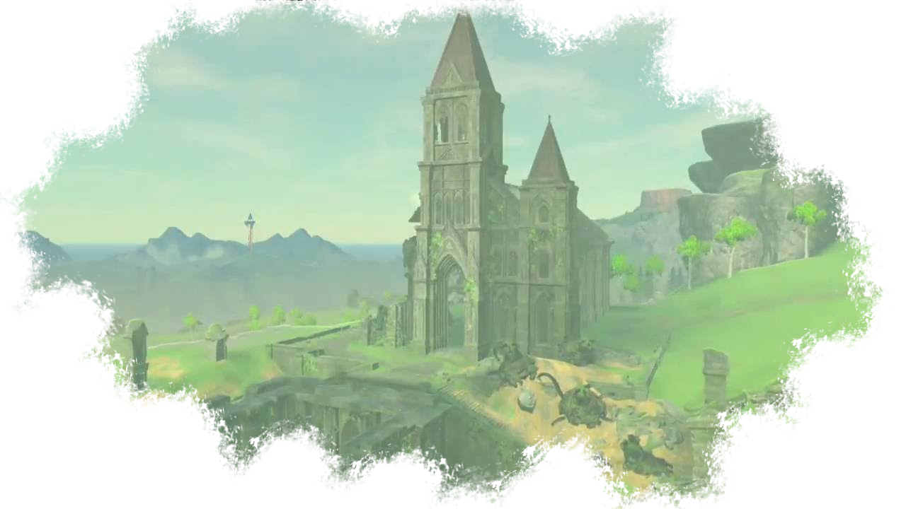

Hyrule

Le royaume d'Hyrule, aussi parfois appelé la terre des Dieux, est une région vaste et prospère, traversée autant par des montagnes gigantesques que par des déserts arides ou des lacs cristalins.
Hyrule est une région verte, pleine de forêts et de collines verdoyantes qui s'étendent à perte de vue. La Déesse Hylia elle-même vivait sur ces terres, il y a des milliers d'années. Quand elle est redevenue mortelle, ce sont ses descendants qui ont commencé à gouverner la région.
La famille royale Hylienne a toujours été très aimée de son peuple et a toujours montré envers lui un respect et une fidélité sans faille. Le roi et sa famille vivent dans le château d'Hyrule, d'où ils dirigent et protègent le royaume.
Hyrule et connu de nombreuses guerres a cause du pouvoir divin que certains artefacts divins, tels que la triforce. Ceux-ci ont toujours été source de convoitise pour des êtres mal intentionnés qui ont cherché à se procurer cette relique aux pouvoirs incommensurables pour diriger eux-même le royaume.
Ces conflits ont toujours opposés les forces du mal face au héros choisi par l'épée de légende, souvent accompagné et soutenu par la réincarnation de la Déesse elle-même, souvent appelée Zelda selon la tradition.

De nombreuses races vivent en Hyrule, souvent en harmonie. Bien que les hyliens soient majoritaires, d'autres cultures ont joué un rôle majeur dans l'histoire et ont fortement contribué, même dans l'ombre, à ce qu'est devenue le royaume aujourd'hui.
Avant l'attaque du fléau ressuscité, le Royaume était prospère et avait un savoir technologique et magique sans précédent. Les Sheikahs, scientifiques de génie, ont su sécuriser la région toute entière grâce à des reliques millénaires permettant d'offrir à Hyrule une protection automatisée et sans faille... Du moins, c'est ce qu'ils ont cru.

Lorsque Ganon a submergé, il a pris le contrôle de toute l'armée mécanique royale et s'en est servi pour dévaster la région toute entière. Une large majorité de la population, toute races confondues, a été tuée pendant l'assaut et de vastes étendues habitées ont été rasées et abandonnées par les survivants.

Même quand la princesse Zelda est parvenue à enfermer le fléau à l'intérieur du château royal, l'influence maléfique de la bête a continué de s'accroître et, indirectement grâce à ses créatures, il a pu continuer a imposer à Hyrule toute entière son emprise maléfique.
Certaines zones ont été plus épargnées que d'autres par les attaques. Certains villages subsistent et les survivants y sont rassemblés et essayent, tant bien que mal, de vivre paisiblement. De nombreuses personnes ont opté pour un mode de vie nomade. Ils voyagent et font des haltes dans les nombreux relais présents un peu partout.

Les reliques du passé attirent, et certains chasseurs de trésors n'hésitent pas à braver le danger pour essayer de trouver des artefacts qu'ils espèrent revendre à prix d'or. Bien que dévastée, Hyrule reste riche de mystères et il ne tient qu'aux plus courageux d'aller les découvrir.

Le cataclysme d'il y a un siècle a certes décimé les populations humanoïdes, mais elle a permis à la nature de reprendre ses droits. La vie sauvage est partout et grouille. Il n'est pas rare de voir un troupeau de chevaux galoper au loin, ou de croiser une biche fuyant dans les bois à la vue d'un chasseur potentiel.
La dévastation Hylienne montre un paradoxe: la région est pleine de dangers, souvent brutaux et violents, mais elle a acquis au fil des années un charme unique et bucolique. Certains hyliens ont parfaitement retranscrit la beauté sauvage de la région et les relais exposent sur leurs murs des tableaux saisissants. A la fois champêtre et mortelle, aride et fertile, Hyrule est plus que jamais un endroit à nulle autre pareille.
Les ruines abandonnées sont devenues verdoyantes, les routes sont rares et le moindre voyage est pour beaucoup synonyme d'une expédition aux allures d'inconnu. Certaines constructions issues d'un passé lointain ont refait surface. Que ce soit des temples ou des tours immenses, leur soudaine apparition laisse a présager le retour du héros capable de terrasser le mal, et peut-être redonner à cette apocalypse des airs de sérénité...
